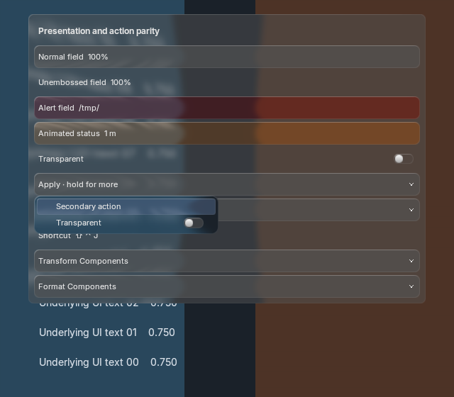
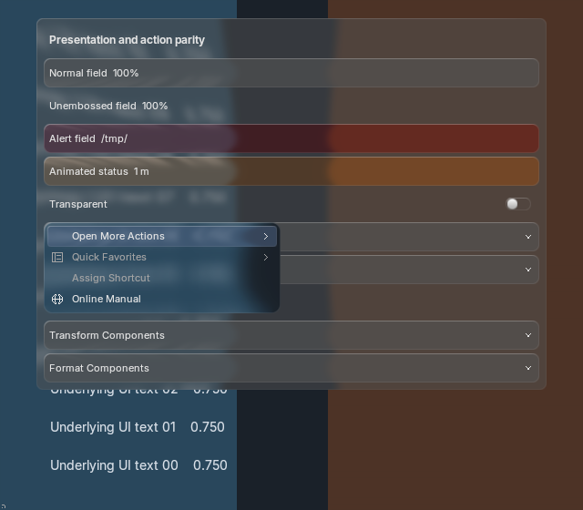

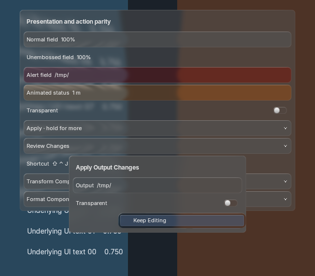
Actual Blender production renderer: hold menus, popup confirmation, shortcut display, persistent component editors and field status. Shared glass, active-theme colors and source motion. These are execution captures, not generated references; exact-match acceptance remains open.
13 passing Blender processes including the paired performance probe; 240 pixel-identical text batching pairs; retained backdrop/blur resources. All five windowed launches activated Blender despite --no-window-focus. No deliberate focus action was used.
Acceptance and source hashes · Runtime records · Focus audit · Paired performance · Performance focus audit

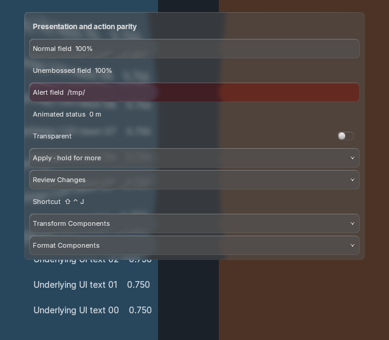
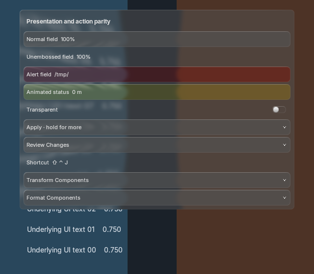
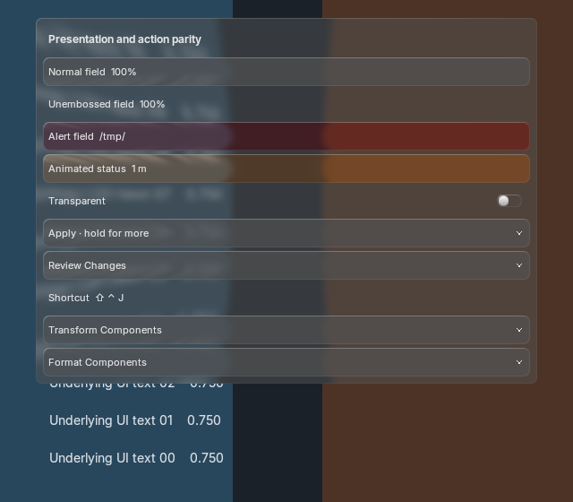



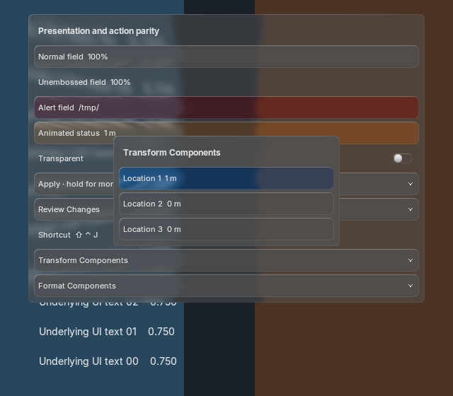
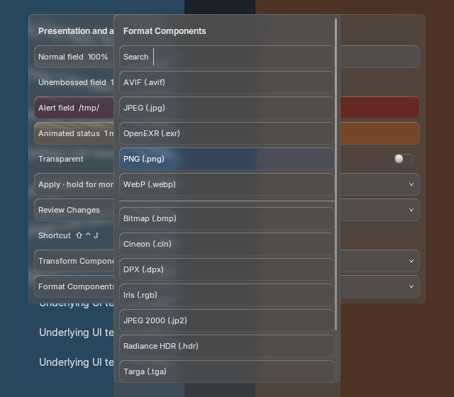
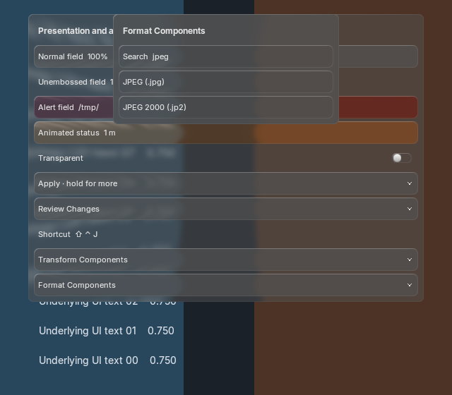
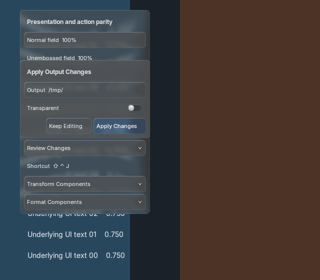
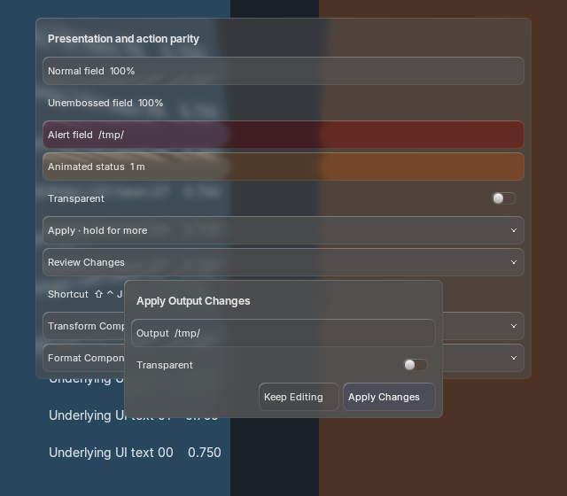